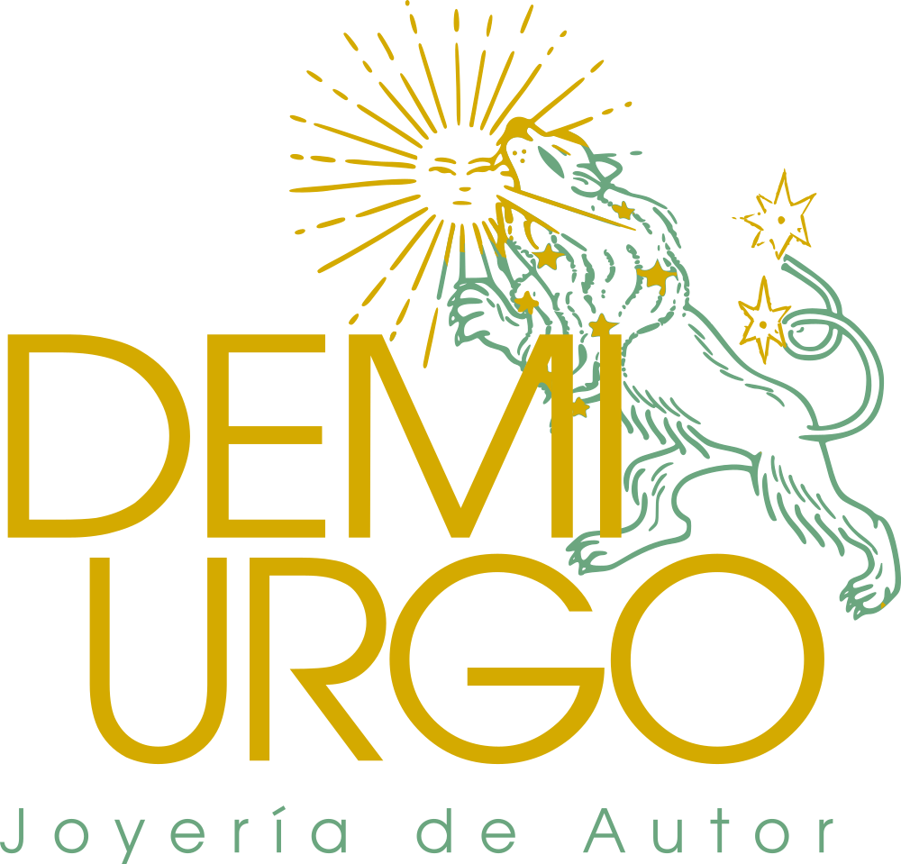
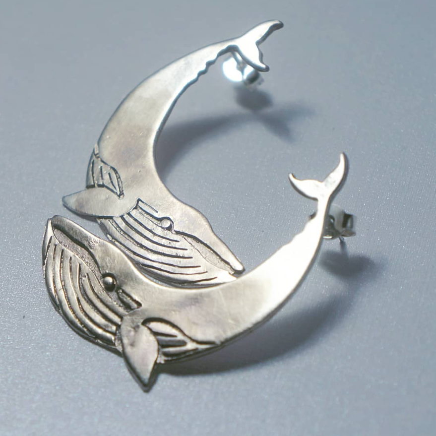
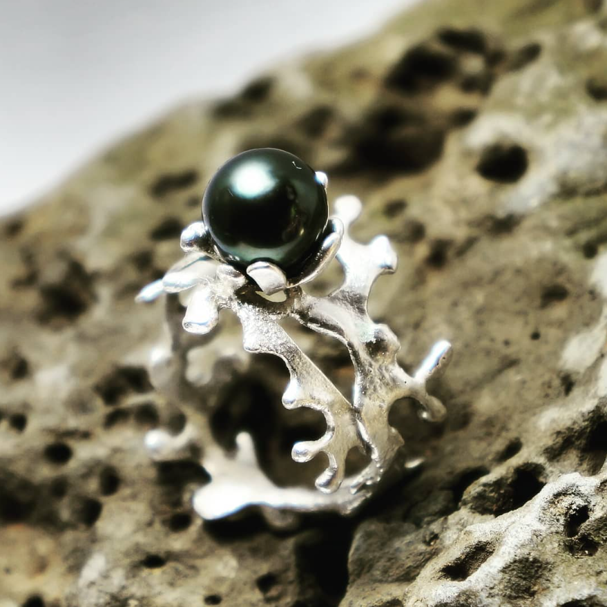
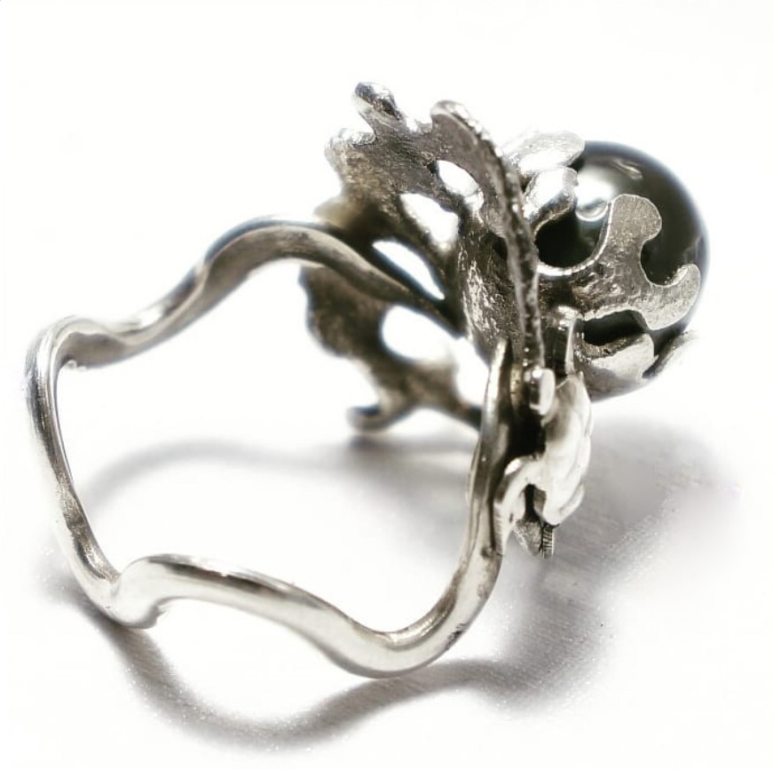

Quiénes somos
Taller Demiurgo es un espacio de creación donde el fuego y el metal se transforman en joyas únicas. Cada pieza se diseña y trabaja a mano en plata, combinando artesanía tradicional y diseño contemporáneo.
Nuestros productos
Elaboramos joyas artesanales en plata 950: anillos, colgantes, cadenas y piezas personalizadas. Cada objeto es trabajado cuidadosamente en el taller para crear piezas con carácter y estilo propio.
Promociones
Descubre nuestras piezas destacadas, colecciones especiales y promociones disponibles durante el año. Una oportunidad para adquirir joyería artesanal única.
Galería
Una muestra del trabajo realizado en el taller: diseño, fuego y metal convertidos en piezas únicas.


